Medical waste is no joke. Not only can the cost of waste disposal and single use materials be passed on to patients in the dreaded hospital bill, but the environmental impacts are also formidable. One of the most prevalent materials in hospitals is a plastic based fabric called blue wrap. This blue wrap is used to protect the sterile field, so it can be found in most operating rooms. The issue is that after being used only one time, the blue wrap goes straight in the trash, adding up nationally to an estimated 1,045 tons of plastic every day. But what if we could change that? In 2019, Nurses at Northern Arizona Healthcare started collecting the blue wrap to sew into bags, calling their work “The Blue Wrap Project.” Now, I get to work with those nurses to continue the project. I am working to educate the hospital leaders and Flagstaff community at large about the importance of the Blue Wrap Project, and hospital sustainability as a whole. This will be done through interviews with community members, and the creation of articles, potentially for the Arizona Daily Sun and The Arizona State Board of Nursing.
Introduction: A Deep Dive Into The Blue Wrap Project 2/21/24
February 21, 2024 9:22 am
If you haven’t heard about Blue Wrap before, it may come as a surprise that this plastic based fabric is a leading contributor to hospital waste. Blue wrap is used to maintain the sterile field of tools. The tools are wrapped in blue wrap, taped with indicator tape, and sterilized via autoclave. This sterilization is amazing. What’s not so amazing? It is estimated that 19% of medical waste is blue wrap.
In 2019, Northern Arizona Healthcare started trying to address this problem, leading to their Blue Wrap Project, in which they collect used blue wrap and repurpose it to make things like patient belonging bags, thus saving it from the landfill.
A blue wrap patient belonging bag. This is the one my advisors showed me at our first meeting!
Between the time I found out about my project and today, I stayed pretty busy. The main thing produced in this time was my proposal, which you can read here:
If you don’t want to read that whole thing, then know that the most important parts are:
The goals: to aid the hospital in compiling results from the Blue Wrap Project, helping to create an article for the Arizona State Board of Nursing and potentially for The Daily Sun as well, and to both spread awareness about NAH’s Blue Wrap Project and medical sustainability as a whole.
The literature review: the most interesting part of the literature review for me was the information about reusable sterilization systems, a far more sustainable alternative to blue wrap. The reason these systems are not commonplace yet is the high cost of the cases, but research suggested that the reusable cases end up saving money in the long run. I will definitely be discussing this in articles intended for the medical community, as convincing the hospital to purchase more cases would be amazing.
You may notice I have not yet introduced myself. Frankly, that’s because I know your attention span is short, and I wanted to start off with my project. But now that I’m at the end of the post: Hi, I’m Delaney. I like spending time outside, with my family, doing arts and crafts, and reading. I work as a barista in Sedona, which gives me a chance to make other people happy on a daily basis. I am interested in a lot of subjects, with the ones most relative to this project being art and medicine.
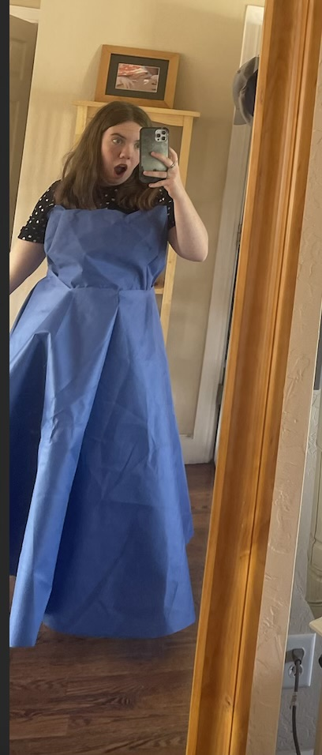
Me in a blue wrap dress I started sewing while playing with the material. This piece is clearly incomplete, but it I had fun making it!
Now that the introductions are over with, next week I will be able to tell you about all the other parts of this project that I have experienced over the past few months, from meetings with mentors to working with the blue wrap itself.
Week 1: A Look Back 2/28
February 23, 2024 12:40 pm
Hey guys! It’s time for some mega catch up action. You see, I ran out of words in my last post, but here’s a list of what I have done for my project so far:
My first meeting. On October 23, I met with all my external advisors. It was the first time I was really getting to hear about my project, and it got me really excited. Prior to that, I wasn’t entirely sold on the project. But at that meeting, I got to hear Kylie and Sylvia talk about how they started the project. They are truly passionate about The Blue Wrap Project, and I was inspired by their success in solving a problem. After this meeting, Sylvia gave me a bag of blue wrap so I could experience a bit of the process.
For the next few weeks, I worked on my proposal. I read a ton of sources and learned all I could. I also started my Big Blue Binder, which I use to keep all my materials related to the blue wrap project.
On November 14, I had another meeting at the research department. We talked more about the successes of the program and how I could help.
On December 7, I got to come watch Sylvia and Kylie talk about the project at a mini grant presentation. It was really fun to get to see, and gave me a lot of ideas about how to present The Blue Wrap Project
After that, I finished my project proposal, as well as worked more with the blue wrap, including testing its ability to be melted, dyed, and otherwise altered.
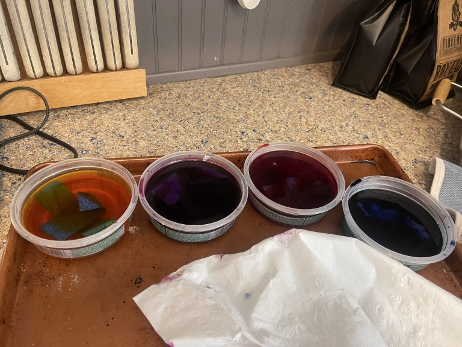
Several blue wrap experiments
On December 22, the coffee shop I work at hosted an art night, and requested that I bring something. I knew this was the perfect opportunity to educate more on The Blue Wrap Project. I made just over a dozen bags, as well as making a sign to accompany the bags, explaining what blue wrap is and how NAH is working on the issue.
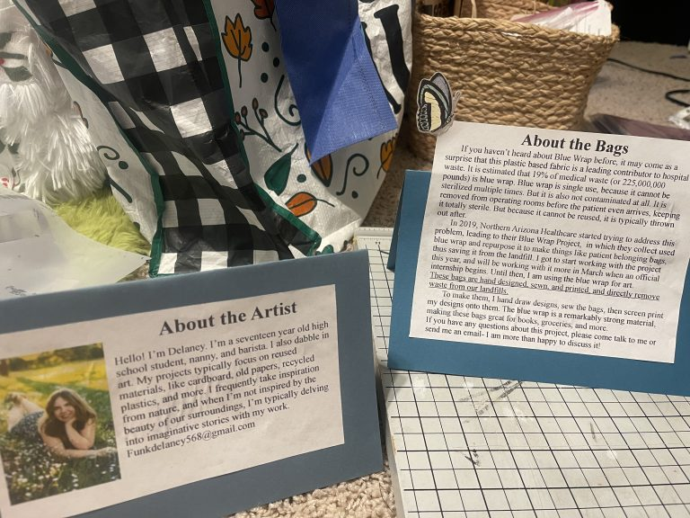
The signs I made for the art show
In January, I went and got all the tests and vaccines I needed for my internship, and also did a lot of HR modules to get clearance to be in the hospital.
Just this month, we finally got to start working in the hospital. We had a meeting where we got to meet the board as well. After that we got our badges, signifying that we were in fact, official.
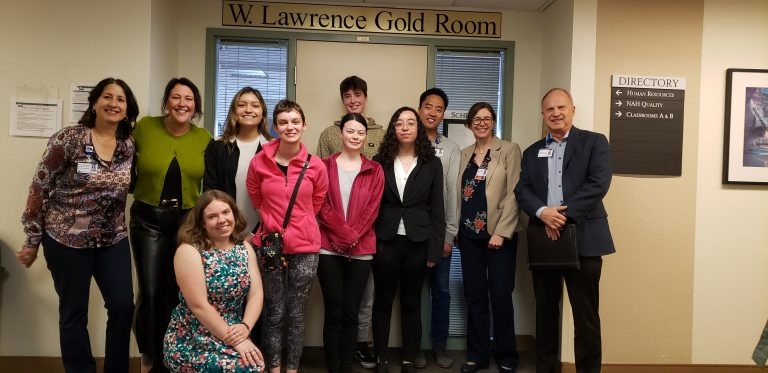
Us after our meeting
Since then, we have been working in the research department. We worked on evidence tables (essentially notes to easily reference our sources.)
So now time for a little reflection:
The skills I have used the most so far: If there is one thing BASIS taught me, it is how to get things done. That has been super useful in completing all the HR modules and proposal paperwork. I am super grateful I learned to do research papers before, as it made the lit review more approachable.
What has provided the most room for growth: I definitely had to grow as an individual. The senior project requires a lot of self confidence- you are dealing with something important, and are responsible for your work. This is something that we don’t experience a ton in high school, and it makes the projects a unique experience.
What I’m most proud of so far: It was super fun to make the bags for the art show. I got them done on a tight deadline and was able to chat with folks about my project, which has been genuinely enjoyable.
Week 2: The Grand Canyon And High School English Class
March 6, 2024 11:31 am
Howdy!
You may be wondering what the Grand Canyon and English class have in common. Worry not, I’ll tell you.
First, let me catch you up on where I have been. As anyone who tried to text, call, or email me can attest, I was completely off grid.
We got to go on our second backpack down the Tanner trail in the Grand Canyon. It is ten miles long, so twenty round trip, and my mom and I took a day hike to Cardenas beach, which added a few miles, and gave us the chance to dunk in the frigid river.
NOTE: THESE IMAGES ARE ARRANGED IN A 1 X 5 GRID IN THE ORIGINAL POST.
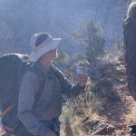
Derrik, a man we met on the trail, who agreed to take a picture with one of the blue wrap hearts.
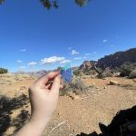
I took some blue wrap pics while we waited for lunch!
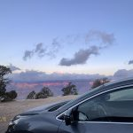
The sunrise when we left was pretty gorgeous!
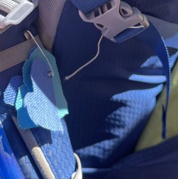
Before we left, I cut out some blue wrap hearts for photos and showing people we met on the trail.
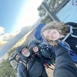
Us in front of the trail sign the day we set off- we took this same picture last time we went.
While we were down there, I even did a little blue wrap project outreach.
Given that the blue wrap project is about waste, I also made extra sure to pick up any plastic bits I found down there (not pictured)
Five days with no cell signal is a long time to think. One of the things I thought about was my final product, which will be some form of informational piece designed to tell people about my project. This is where English classes come in. For literature class, we talked a lot about SOAPSTone (Subject, Occasion, Audience, Purpose, Speaker, and Tone.) Typically, this is used to analyze already existing pieces, but I think it is something that can help me with my final products.
So here it is:
SOAPSTone: Blue Wrap Edition (The Main Brochure/Flyer)
Subject: Blue Wrap, a plastic based fabric used to create and maintain a sterile field for tools used in the OR. Additionally, how this blue wrap is typically disposed, and how The Blue Wrap Project has helped save this waste from the landfill.
Occasion: Our beautiful town of Flagstaff, Arizona, for the past few years and all the decades to come.
Audience: The general public (likely in Flagstaff). I will be presenting and distributing this at my presentation, but will also be leaving it with the hospital for whatever purposes they need. Because the audience is likely to be in Flagstaff, I can also use what I know about the Flagstaff vibe, such as the tendency to love the outdoors.
Purpose: To make people aware of everything to do with blue wrap, and incite excitement for the project and our local hospital’s ongoing efforts to improve sustainability.
Speaker: Me!
Tone: Informational, but casual enough for the general public to receive well. I think that for this, it is important not to come off too “Science-y.”
SOAPSTone: Replacing Blue Wrap with Reusable Options Edition
Subject: Replacing Blue Wrap with reusable sterilization casks to reduce waste.
Occasion: Northern Arizona Healthcare, written in spring 2024 with an intended impact on the future.
Audience: The higher ups at NAH, who might be able to allocate budget towards replacing blue wrap with reusable alternatives.
Purpose: To convince NAH decision makers to replace blue wrap. Down with the plastic!!!
Speaker: Me!
Tone: Aiming for a more factual piece, stating the many benefits as well as costs of reusable casks.
I will also be filling out one of these SOAPSTones for the articles I write, which I will start soon!
Week 4: Spring Break
March 20, 2024 11:34 am
Recently, we had spring break. I had not planned to celebrate, but I ended up enjoying some of the festivities. I got to go to a Gregory Alan Isakov concert with my family, meet up with friends, spend time with family, and in general do a lot of human connection.
I think that is what reminded me most of my project (that is, the human connection.) I picked up a few extra shifts as a barista because we were short staffed, and at work I always get to interact with people. With most, it’s simply a short exchange focused on what they would like to drink that day. But with others, I get to converse about topics that matter.
For example, one of the customers that came in was working on research involving hydroelectric power. It is always cool hearing what other people are passionate about, and how they talk about it can help me with my own project. This time, I was reminded that making sure you speak in “normal person language” is important, and that even complex topics can be explained to someone with no prior knowledge. That’s important because I want to explain The Blue Wrap Project to a wide audience.
Before spring break, My internal advisor gave me some amazing ideas. Going forward, I plan to talk to the nonprofit Threaded Together as well as work on a prom dress made of blue wrap.
I also got to meet with Dee W. about sustainability. I will be reflecting on that a bit more tonight, but for now I can say it was super inspiring, and I got a lot of great ideas.
Speaking of tonight, I will likely be publishing an additional blog post about the more project focused things I have worked on these past few weeks. Every so often I go work at Cline Library, which tends to be a hyper-productive few hours. I plan to do that tonight, and will blog about the experience. I also have a team meeting with Sylvia, Kylie, and Paula coming up tomorrow, along with some shadowing that haas yet to be scheduled.
Week 4.5
March 20, 2024 5:33 pm
Okay, so it’s not really week 4 and a half exactly, as I’m writing this the same day as my other post, but week 4.14285714 didn’t have the same ring to it. Today I am really leaning into my questions. If you didn’t know, last week I created a document to store all my project stuff. It’s truly a beauty. I made everyone at the office admire my table of contents (which, by the way, allows you to click a title and teleport to that section [which is awesome.]) While I was making this document, I added a section of questions to guide my research. The questions are as follows:
What does the process of blue wrap look like, from first setting up the tray to completion?
What is current legislation/acts/government programs regarding medical sustainability?
How many reusable casks does NAH use?
How much Blue Wrap does NAH use?
What are the benefits of replacing blue wrap?
How can we keep the Blue Wrap Project going?
What are possible issues with the Blue Wrap Project?
What are similar projects, and have they succeeded?
What can I do to help this project?
While working on this project, how can I develop skills I will need for the future?
Now, some of these questions will be more straightforward, and are going to be components of the final product. Other questions are really just question-y ways to describe the main goals of my project. I think going forward I will answer a couple questions each blog post, leading to them hopefully all being answered.
Today I want to focus on the question “What is current legislation/acts/government programs regarding medical sustainability?”
This question popped into my head during Wednesday of last week. I wrote about it, but never posted. Here is an excerpt:
“On Wednesday, I got to meet with Dee W. She is an incredible individual who works with sustainability and quality of care for patients. She worked at Banner Health for several years, and has been at NAH for three years. I will go through the information I learned from this later, but it gave me a few topics to research.
First, government things. I had not previously thought about all that, which is kind of crazy, but Dee W. mentioned a Biden-Harris administration program (?) involving hospital sustainability.” (Delaney Funk, 2024)
The first thing I found researching this was actually a website for Global Green and Healthy Hospitals which I had not previously encountered. It had links to hospitals in many different countries, which is awesome, and which I will definitely be looking into more. Upon selecting The United States as my region, I was linked to Practice Greenhealth. I will absolutely be looking at this website again for further research. But back to the laws.
My next google search was for “Biden-Harris Hospital Sustainability” which linked me to the health sector climate pledge. This is what I was really looking for all this time.
On April 22, 2022, the pledge was launched. OASH says of the pledge the following: “The voluntary pledge asks signees to, at a minimum, commit to: (1) reducing their organization’s emissions (by 50% by 2030 and to net zero by 2050) and publicly reporting on their progress; (2) completing an inventory of Scope 3 (supply chain) emissions; and (3) developing climate resilience plans for their facilities and communities. It also asks them to designate an executive lead for this work.”
As you can tell, with one question answered, even more popped up. Today, I added : “What’s the scoop on Stryker, Medline, and reusable materials?”
But that will be a story for another time, when I am not 150 words over the limit.
Feel free to leave me more questions in the comments, I will be organizing those into my document as well.
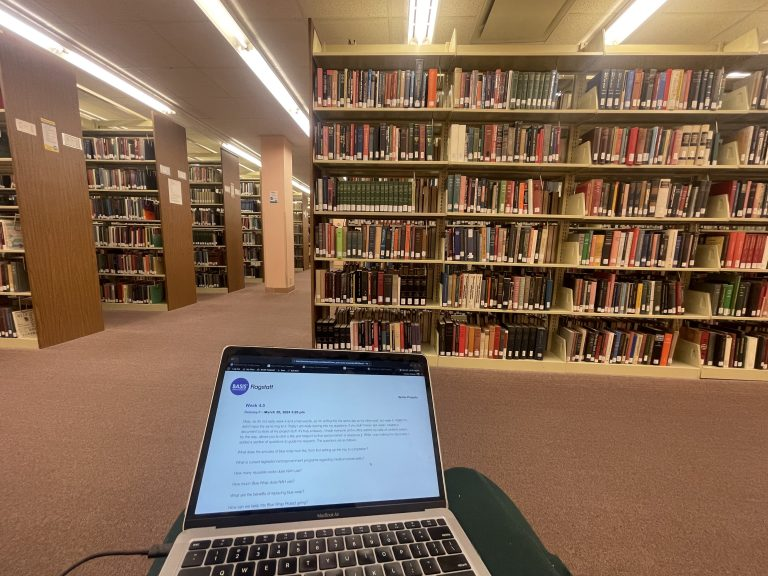
I often come to the library to work- I feel pressured by the productive people around me. There’s also some blogpost-ception going on in this post now.
As the end of March nears, I will be deep diving into all my questions. For the next three weeks, I will be working remotely from different states across the U.S.
Worry not, I will still be putting in all the work needed to get this project. I plan to spend a lot of cozy evenings with a cup of tea and my computer, working on learning even more about medical sustainability.
This past week, I got to meet with Paula and Sylvia. They were excited about the things I have planned and what I have accomplished thus far. There were some updates regarding the project. For one, the de-taping volunteers stopped de-taping> This ended up well though, as the process was moved to OR staff, which eliminated a lot of transport of blue wrap and made the process smoother overall. In other amazing news, the Blue Wrap Project is no longer a mini grant- it is now a permanent component of the OR budget!!! Besides hearing about all the goings on, this meeting was just a great opportunity to catch up and develop ideas further.
I also scheduled some things. Things like meetings. Meetings with Threaded Together, SPD (the people who put together the sterile tool trays), and more.
I am super excited to continue working on this project right now. I feel like I have a clear path forward. Things I need to do include:
Sew bags for my final presentation
Sew a prom dress
Answer all my questions
Create my final fliers
I don’t have any pictures of any of this, but here is a picture of Cheeto the cat living under our porch right now.
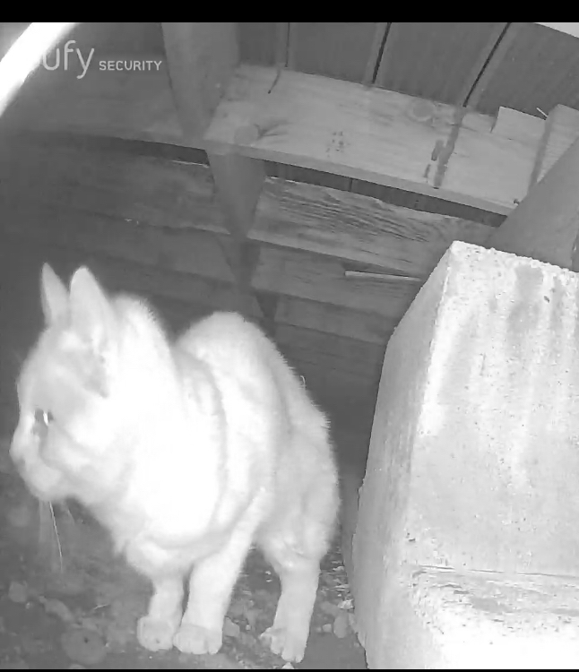
Cheeto <3
Week 5.5: A Bonus Blog (Because I Did Some Cool Things)
March 29, 2024 9:41 am
For the first half of this blog I’m going to be transcribing from an audio recording because I was driving home when I wrote it. Because of that it is written in the verb tenses from the day I recorded it and in general sounds a lot less polished. However, I think that is an interesting twist, so I’m leaving it primarily as is with minor edits for clarity. Without further ado, here is my reflection after a meeting with Threaded Together, a charity specializing in sewing education.
That was like the coolest thing ever, I just got out of a meeting with Rachel from Threaded Together who was amazing. We talked about everything.
I think part of my project I might include just a little tidbit in my articles talking about fair wages. They have an issue where like nobody wants to pay an appropriate price for like bags and stuff because everyone is used to prices that come from using overseas labor. But it’s an issue, so I think I wanna look into that more and mention that.
And then also she gave me patterns to look at for my prom dress, so I think I’m going to do like a vintage vogue type prom dress. Like vintage vogue, but medical waste. Which is weird, but also super super cool. Getting to wear a piece of my research project to prom I think would be really fun.
Rachel gave me so many good ideas. I have them in a list that I will copy into this blog post. But then at the end of the meeting someone was like “Hey, I didn’t want to interrupt, but I was eavesdropping” and then they said “I’m Scott, I used to work with The Daily Sun and if you need an in to the newspaper, I can put a bug in their ear.” And I was like yes, absolutely.
At the meeting there were just so many good ideas and so much help. I am definitely going to be going to their Wednesday community open nights they have when I am back in town. I’ll have to try to move my nights as a nanny to be able to go, but that shouldn’t be a huge deal.
But yeah, that was just amazing, I’m super super excited about it, and now I have to go get blue wrap from my house that I de-taped to drop it off at the hospital, and then I get to pack!
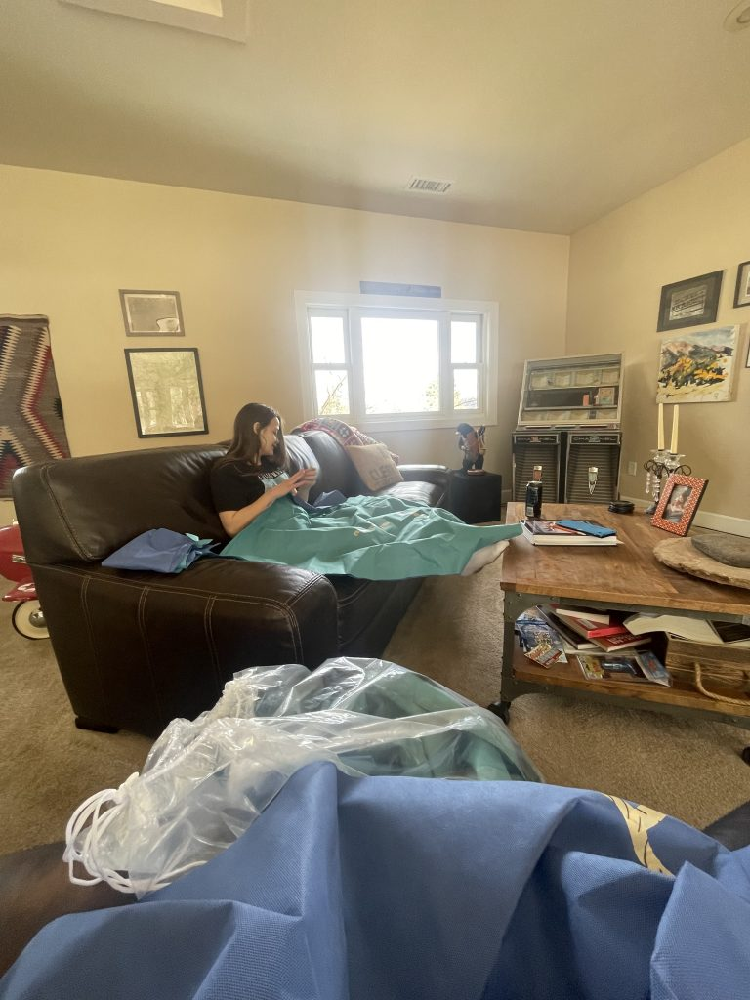
I had a friend over to help de-tape. I made her crêpes in return.
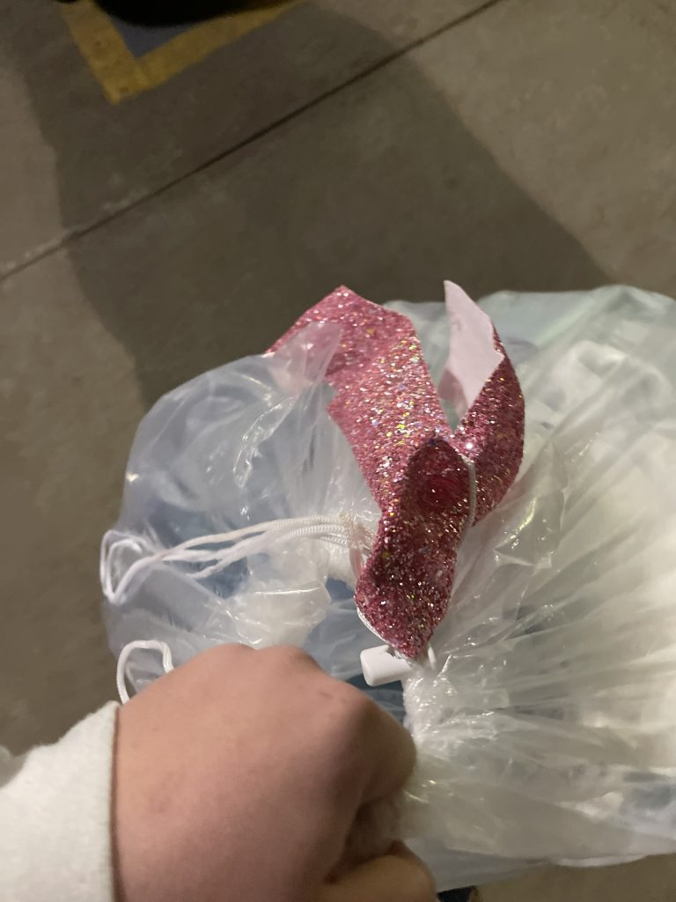
This is the blue wrap I dropped off at the hospital after de-taping it. The ribbon is for style points (And also so they know to weigh this one)
Okay, so that was my chaotic ramblings about our meeting. Here is the list of things to look into more that I mentioned:
Wednesday nights open studio
Seamstress wages
Outreach
Fiber fest
Cost benefit analysis
Energy cost
Support artists
Textile waste
Similar size hospitals
Flagstaff waste in general
Waste costs
Go from city side
Now, in addition to that amazing meeting with threaded together, I have had a little more productivity than I anticipated. I am traveling right now, so I thought I wouldn’t touch my project much until my designated research time. But in a somewhat unsurprising turn of events, I could not help myself.
You see, it turns out whenever I meet any stranger anywhere, I am naturally inclined to tell them about my project. Yesterday this happened several thousand feet in the air. While on a flight to Phoenix, I was sat next to a very nice woman who was going to visit family. She asked me about school which gave me an opening to talk about my project.
Now, this is not the first time this has happened, but it has definitely gotten easier to explain. It is hard figuring out how to give a synopsis of my project while still explaining what I do for it and the other details. This past time, that summary went something like:
“So there’s this stuff called blue wrap- it’s a plastic based fabric that they use in the operating room to wrap around tools and keep them clean. But it can only be used once, and afterwards, it gets thrown out. This makes it a huge problem for the environment. A few years ago some of the nurses started collecting it and repurposing it into things like tote bags. They called this The Blue Wrap Project.
I got chosen to work with this project to make sure it keeps going and spread the word about how cool it is.”
Depending on who I’m taking to and my mood, I tend to add in bits about replacing blue wrap, medical sustainability in general, the people I have gotten to work with, and more.
Week 6: Still Out Of Office
April 4, 2024 5:43 pm
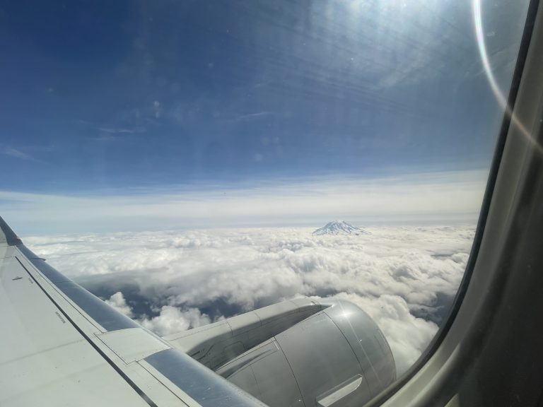
A picture from my flight home yesterday!
As the title implies, I am yet again writing from a new location. This week, I am at St. John’s College which I will be attending in fall. I will be working on answering the questions posed to me in my interview with Threaded Together and those which are still on my list. They are as follows:
How do you do a cost benefit analysis?
How much does it cost for sterilization?
How much does medical waste disposal cost?
What is current legislation/acts/government programs regarding medical sustainability?
What’s the scoop on Stryker, Medline, and reusable materials?
How many reusable casks does NAH use?
How much blue wrap does NAH use?
How much does NAH spend on blue wrap?
What are the benefits of replacing blue wrap?
How can we keep the Blue Wrap Project going?
What are possible issues with the Blue Wrap Project?
What are similar projects, and have they succeeded?
Now, clearly I will not be answering all of these today, but it is a continued work in progress.
One question I have an answer to is “How much blue wrap does NAH use?”
In my meeting with Dee W. She gave me spreadsheets that indicate NAH spends $53,688.00 per year on blue wrap.
Now, in regards to Stryker, Medline, and reusable materials: these were topics mentioned by Dee that caught my interest. The general idea seems to be that the sellers of medical supplies initiate programs that allow their products to be reused or recycled. I think to figure all this out, it will be good to examine the supply chain of the hospital. First though, I looked at the supplier websites. The Stryker site did not have any easily accessible information on sustainability efforts, so I will be giving them a call when I get the chance. The Medline website, however, had an entire page for their sustainability efforts. There are two programs which I teemed slightly less relevant to The Blue Wrap Project, but which I think are super cool, and which I want to find out if our hospital is utilizing. Those are the “gloves waste-to-energy” program which uses old gloves to create energy and the “tote exchange” program, which delivers supplies in reusable totes to minimize the amount of cardboard waste from deliveries.
The most relevant programs I found were the medical device and medical instrument reprocessing programs, which, as implied by the name, reprocess the devices and tools.
In these programs, the hospitals use the tools then sterilize them and return them to the manufacturer for a rebate. This is a great program, but unfortunately, it is not as feasible with blue wrap due to its single use nature.
I also reached out to potential interviewees this week.
And that’s all for now. Next week, I will answer even more questions and hopefully line up some interviews!
Week 8: SPD And Things I Need To Learn
April 17, 2024 8:08 pm
Okay- today has been a project whirlwind but has ultimately been amazing. I have just returned from traveling, so a lot was waiting for me when I got home. I will go over it in reverse-ish order, because there is a drawing for my morning activities. Anyways, this afternoon I returned to Threaded Together where they helped me learn to use my sewing machine. You would think that would be a prerequisite for deciding to sew your own prom dress, but no. That is one of a few things I realized I need to learn a lot about. Another is Cost Benefit analysis. That was requested as part of my final product, so I have been gathering info for it for a while. But today I finally sat down and learned what it is and how I can do it. There was a really helpful article from Harvard Business School which I will cite next time when I focus on my cost benefit analysis.
Now onto the star of today- shadowing in SPD (The Sterile Processing Department).
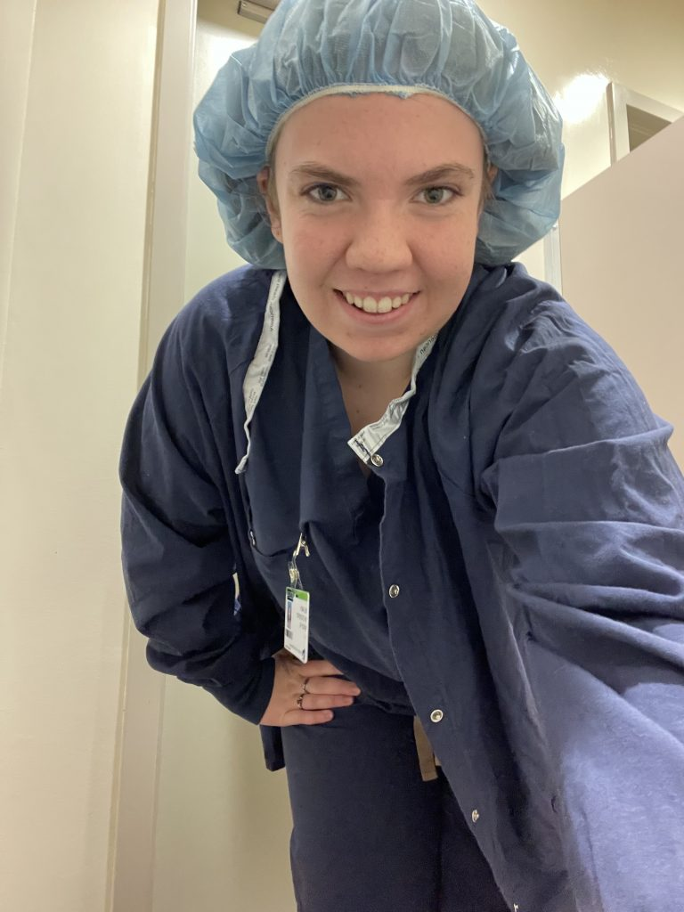
I stuck out much less when I was wearing these!
When I finally found my way to their department on the second floor, I was asked to change into scrubs. I felt official in them, so here is a picture I took. You will notice it is one of the only pictures from today. I decided not to have my phone with me very much so I could focus on what I was learning (and also, I didn’t want to accidentally photograph sensitive information of any sort.) I did however get to take home some pieces, so those photos will make their way into some post or another. One really interesting thing was that the tech I shadowed, Rachel, seemed very keen on the reusable cases. I was surprised by their integration as a whole. I had guessed from the amount of blue wrap that these cases were not used frequently, but that was not the case. It seems to vary day to day, but today most things I saw sterilized were reusable cases, which is awesome. It seems that the mentality in SPD is also very pro reusables. Rachel further outlined the costs associated with blue wrap, and how that can be mitigated. One interesting aspect of this was failure of the sterile field. There was one case of this while I was there, where a wrapped tool was dropped and deemed unsterile. This means the whole thing must be re-sanitized. I also had not previously realized that if one tool for an operation has blue wrap punctures, all the tools must be replaced, because the unsterile one has entered the sterile field. I may make some sort of video about the whole process of wrapping, unwrapping, and inspection later.
Okay, onto another piece of this blog. My beautiful illustration. I’m kidding, this is not my best work. However, it conveys what I saw today without necessitating a photograph.
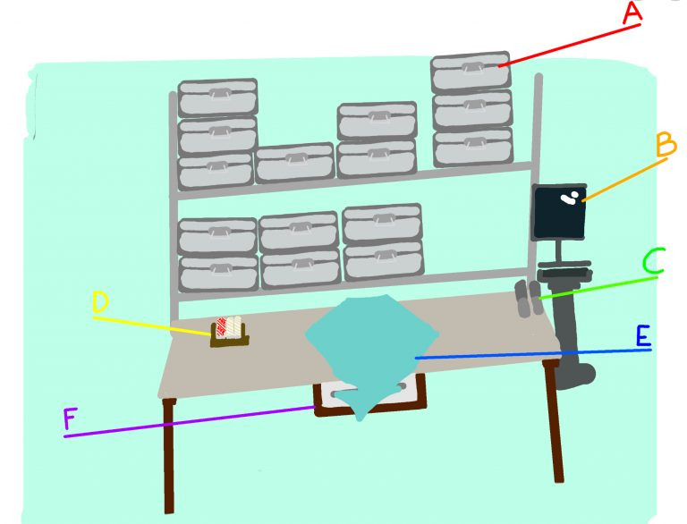
My diagram
This illustrates Rachels workstation. If you were looking at the desk this way and turned around, you would see the autoclaves.
Without further ado, here is a breakdown of all those letters:
A- These are the reusable cases. Shelves full of them filled the room, and were constantly used and replenished. There will b e more info on them later, but it was super cool to see them in person.
B- The computer! This is how SPD keeps track of what items are where and if they are sterile. It is used frequently and is a crucial part of the process.
C- The small labels. Bigger labels are printed at a different desk, but these are the small rectangle ones with the date.
D- Indicator tape (And strips not pictured). Indicator tape goes on the outside of blue wrap or cases to hold the blue wrap shut and indicate whether the item was sterilized. There are a lot of checks for this. Another is indicator strips, two of which are placed in blue wrap parcels to check sterility. There is also a pack that goes into the autoclave with every batch which is checked to ensure there is no opportunity for bacterial growth.
E- The blue wrap being used. I got to learn how the blue wrap is folded (an envelope fold) and what goes into each set. In addition to the blue wrap, each item is also wrapped in a tray liner to absorb excess steam. There are multiple sizes and weights of blue wrap for different uses, and today I learned how to read the numbers on blue wrap to determine this.
F- One of many blue wrap dispensers. The one under the desk holds a small size, but racks against the wall hold squares ranging up to 54×54 inches.
Thank you so much for reading, and I will see you next time!
Week 9
April 25, 2024 8:37 am
Hey y’all. Welcome to the part of the project where everything needs to come together. If this were a tv show, it would be the part where a massive timer on the wall is running out and all the contestants are in a hurry. Of course, this is the time when I got sick, so I had to take a day off. But I am right back to it, and have been furiously sewing, drawing, and typing to get everything I want done.
I have been working on my prom dress, and it is finally in the shape of a dress! It might need some sparkle though…
I have also been working on some top secret projects, which I will reveal at the end.
The other things asked of me deal primarily in information. One thing requested was a cost benefit analysis of the Blue Wrap Project. So I diligently sat down and watched YouTube videos about them, along with reading a very helpful Harvard Business School article on them. Right after that, I had to drive to work, so I couldn’t do much more on my computer. But the hour long drive gives me a lot of time to think. While I was trying to think of all the costs and benefits of The Blue Wrap Project, I realized that I would not be doing a true cost benefit analysis. For one thing, I have a ton of intangible items, such as environmental concerns. And while I could estimate a dollar amount, I know it would not be incredibly accurate. My next idea was to get the tangible numbers and do a separate intangible analysis. While this is possible, I think that it would still not give a clear answer. Moving on to what that answer would be, I realized my biggest issue. Bias. While I am sure it is there in everything, my bias is strong enough that I don’t believe I am an effective person to make this cost benefit analysis. You see, these analyses seem to be intended to reveal whether an idea would be beneficial to a company, whether they should keep it going. And I firmly believe that the Blue Wrap Project should be continued. That is all a really long way to say: In place of a true cost benefit analysis, I will be constructing one that looks a little different.
I will still be weighing pros and cons, but the financial math will be left out. I will be doing these for both the use of blue wrap and the existence of The Blue Wrap Project.
The Pros and Cons of Using Blue Wrap
Pros of Using Blue Wrap
Cons of Using Blue Wrap
Flexibility: It allows for easy wrapping of smaller or awkward shaped items. When an item doesn’t fit well in a rectangular metal case, blue wrap allows it to be wrapped easily.
Cost: NAH spends about 53,000$ annually on blue wrap. Because blue wrap is disposed of after use, this cost is recurrent, and new blue wrap must be bought every time.
Cost: Blue Wrap IS cheaper than the reusable cases in the short run
Difficulty: While the SPD was amazing at wrapping the blue wrap, it is a tedious process, and must be done right every time
Storage space: While the blue wrap is waiting to be used, it takes up minimal space, simply a few inches against a wall.
Susceptibility to Failure: This is one of the biggest cons to blue wrap: It has a higher rate of failure than reusable cases. If the blue wrap fails, the results can be catastrophic. Not only will the tools inside need to be reprocessed, but if the hole or defect is discovered after the contents of the blue wrap have been transferred to the sterile field, everything within that field must be redone, potentially delaying crucial surgeries and costing the hospital big time in labor and supplies.
Staff Preference: Some surgeons and staff prefer blue wrap.
The Environment: The amount of blue wrap disposed of is staggering, and it is clearly an issue for the planet.
The Pros and Cons of The Blue Wrap Project
Pros of The Blue Wrap Project
Cons of The Blue Wrap Project
Reducing Harm: The Blue Wrap Project directly reduces the amount of plastic being put into landfills. Reliance on specific people: The biggest issue with the Blue Wrap Project is its’ reliance on certain people to continue as a program. While these people are amazing, it would be great to see the program continue into the future even if these individuals step back. Steps toward this are being made, for example by having the blue wrap bags as part of the budget instead of as a mini grant.
Involving community: This project allows for community involvement, and allows OR staff to directly impact the amount of surgical waste.
Cutting costs: The Blue Wrap Project saves NAH money on patient belonging bags and eyeglass cases, as well as medical waste disposal fees.
Complying with the government: The Blue Wrap Project is one way NAH can prove that they are in compliance with environmental legislation.
Now, I know this has gone way over the word limit, and also I need to work on my dress, so I will leave it for now and see you next time!